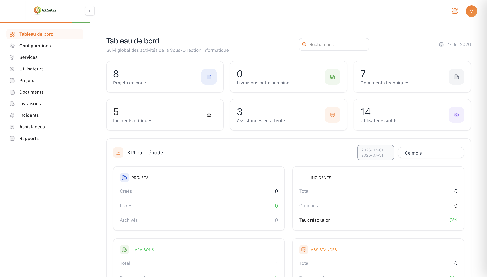
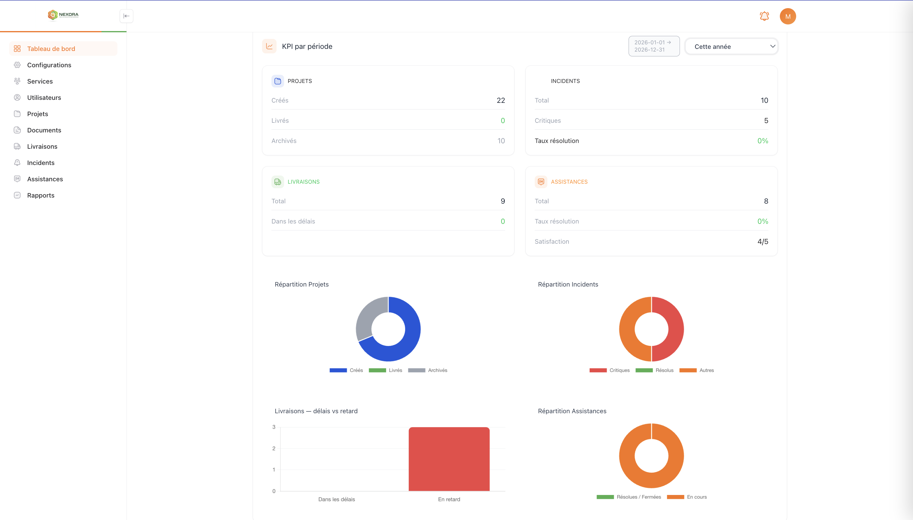
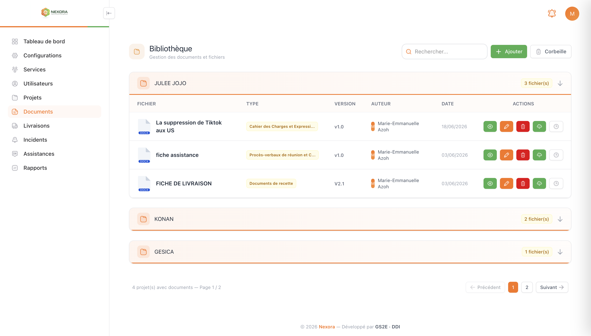

Contexte
Nexora est un outil interne destiné à une sous-direction informatique pour centraliser le suivi des projets, des livraisons, des incidents et des demandes d'assistance de ses équipes. L'objectif était de remplacer un suivi manuel par une plateforme unique, avec des tableaux de bord adaptés à chaque rôle (administrateur, chef de service, agent).
Mon rôle
En charge du développement backend dans son intégralité (architecture Repository → Service → Controller → Resource → Request, authentification JWT, API REST documentée avec Swagger), avec une contribution active sur le frontend Blade/jQuery aux côtés d'un collègue en charge de l'interface.
Fonctionnalités clés
- Tableaux de bord dynamiques selon le rôle utilisateur
- Gestion des services et des équipes
- Suivi des livraisons avec circuit de validation
- Gestion des incidents et demandes d'assistance
- Recherche globale, filtres et pagination
- Notifications par email automatisées
- Rapports et indicateurs (KPI)
- Gestion des accès et désactivation de comptes
Aperçu (captures)
Quelques écrans illustrant le travail réalisé côté interface et côté backend.



